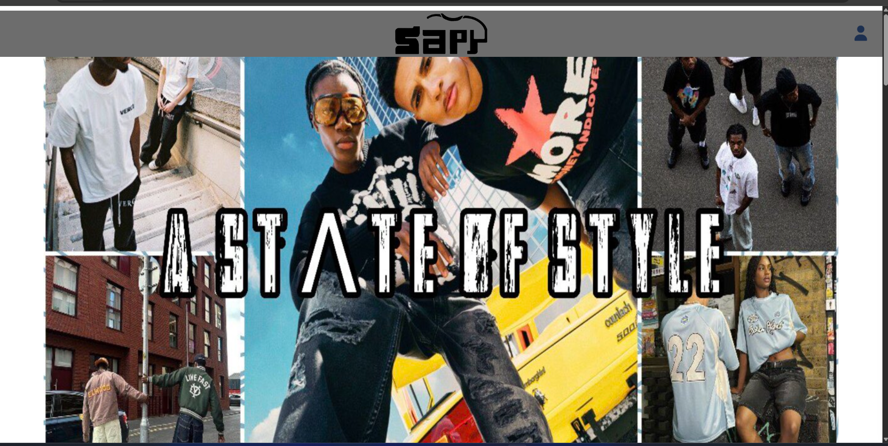
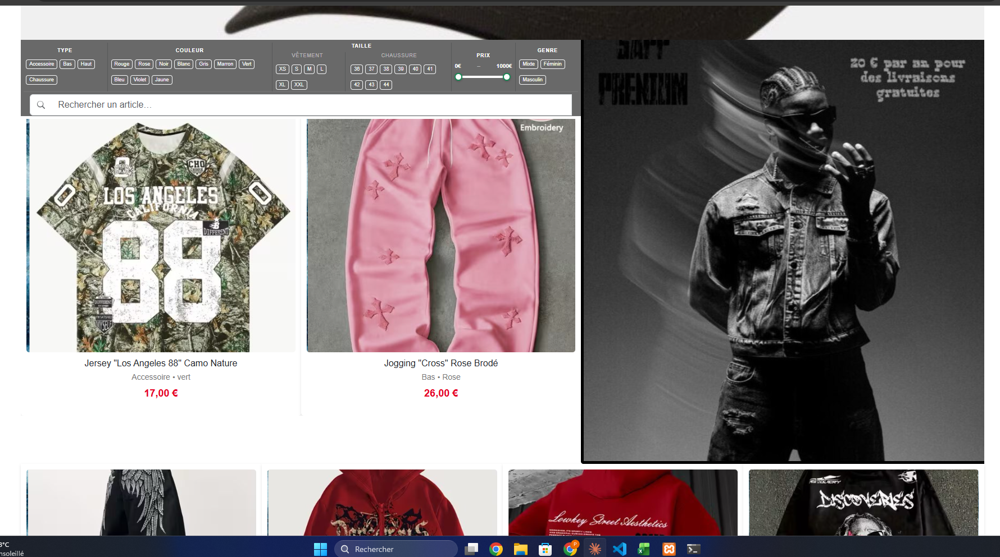
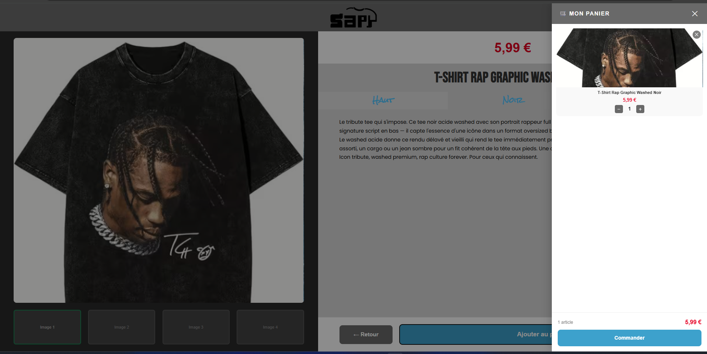
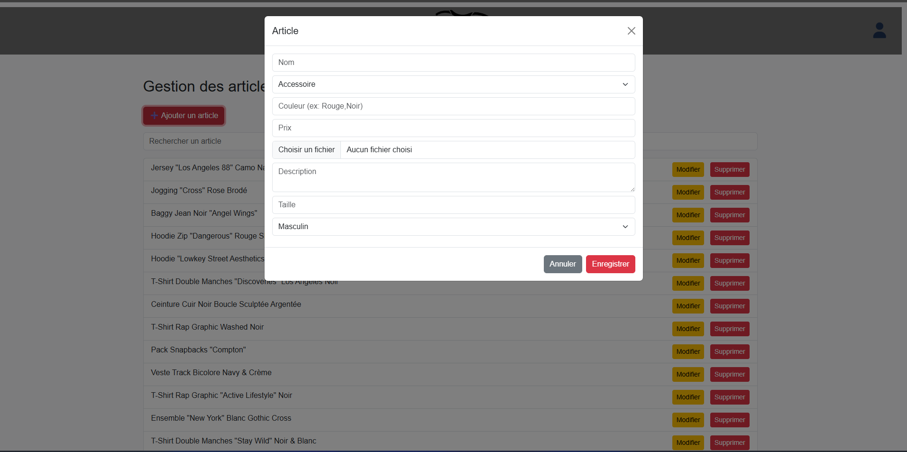
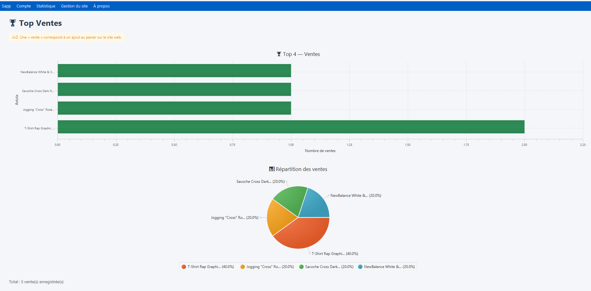
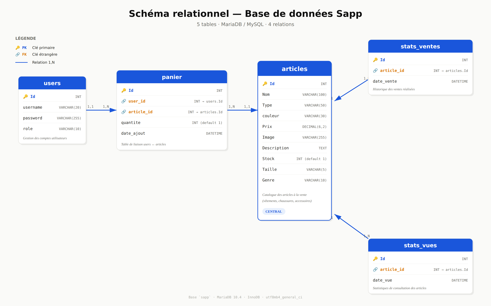

Projet principal · PPE
Web & Desktop
Sapp — plateforme de revente de vêtements
Contexte
Sapp est une plateforme de revente de vêtements entre particuliers, déclinée en version web (navigateur) et version desktop (application Java). L'objectif était de couvrir un cycle de développement complet : analyse du besoin, modélisation de la base de données, développement des deux clients, et tests.
Architecture technique
- Frontend web : HTML5, CSS3, JavaScript (interface responsive)
- Backend web : PHP procédural + orienté objet, couche d'accès BDD via PDO
- Client desktop : Java (Swing/JavaFX) — connexion à la même base MySQL
- Base de données : MySQL — MCD/MLD conçus en amont (Merise)
- Versionnement : Git
Fonctionnalités développées
Inscription / authentification des utilisateurs avec hachage des mots de passe
Publication, modification et suppression d'annonces avec upload d'images
Catalogue avec filtres (catégorie, taille, prix) et recherche
Gestion du profil utilisateur et historique des transactions
Synchronisation web/desktop via la même base de données
Captures d'écran







Compétences BTS SIO couvertes
Travailler en mode projet
Mettre à disposition un service informatique
HTML/CSS
JavaScript
PHP
Java
MySQL